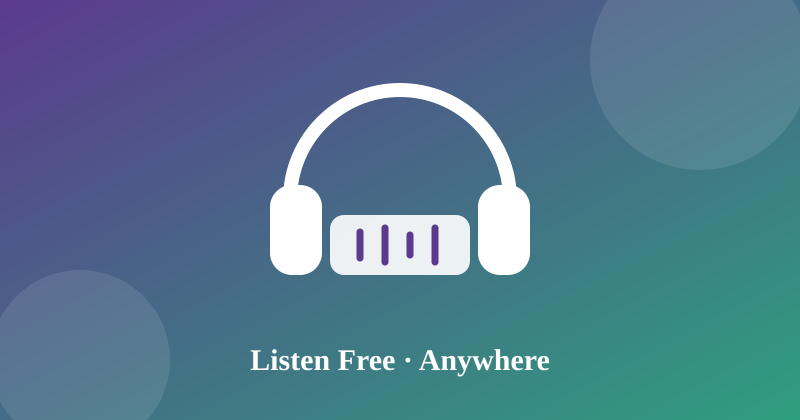

5 Best Free Audiobook Apps for Android (2026)

Audiobooks turn dead time — commutes, chores, workouts — into reading time. The catch is that most audiobook apps are really subscription shops: the app is free, the books are not. We tested the most popular free audiobook apps on a mid-range Android phone for one question: where can you actually listen to real audiobooks for free, without a subscription ambush?
What we tested
- Actually free books — how much you can listen to without paying anything
- Listening experience — offline downloads, sleep timer, playback speed, bookmarks
- Catalogue — new bestsellers vs public-domain classics
- Ads & interruptions — whether ads break your listening
1. Libby — best genuinely free audiobooks
Libby lets you borrow audiobooks, ebooks and magazines from your local library — free, with a library card. The catalogue depends on your library, but most libraries carry current bestsellers alongside the classics. Borrowing works like a real library: loans expire and return automatically, and you can place holds on popular titles. Offline downloads, sleep timer and playback speed are all included, with no ads at all. If your library supports it, this is the answer — install it first.
2. Audible — best catalogue, free tier only
Audible has the biggest audiobook catalogue anywhere, but most of it sits behind a paid subscription. The free tier includes a rotating selection of free titles and free podcasts, and the player itself is excellent — great sleep timer, bookmarks, variable speed and Whispersync with the Kindle app. Worth installing for the free titles and the occasional free first book, but do not expect a free library here.
3. LibriVox — best free classics
LibriVox is a volunteer project that records public-domain books — think Dickens, Austen, Sherlock Holmes — and gives them away free, forever. The apps are simple and the narration quality varies because the readers are volunteers, but the catalogue of classics is huge and costs nothing. Best for listeners who love older books and do not mind a plain player.
4. Google Play Books — best for free classics + buying singles
Google Play Books sells audiobooks one at a time with no subscription, and its free section carries public-domain classics you can keep forever. The player is clean, with offline downloads, sleep timer and speed controls, and your purchases stay in your Google account. A good middle ground if you want to buy the occasional bestseller without a monthly fee.
5. Kobo Books — best free first chapters and deals
Kobo's app pairs its ebook store with audiobooks, and it regularly offers free first books and discounted titles. The player is solid — sleep timer, speed control, offline listening — and it syncs with Kobo e-readers if you own one. Its free catalogue is smaller than Libby's, but the frequent free and cheap titles make it worth checking.
Quick comparison
| App | Free books | Ads | Best for |
|---|---|---|---|
| Libby | Full library loans | None | Free bestsellers via library |
| Audible | Rotating free titles | None | Biggest catalogue |
| LibriVox | All public domain | None | Free classics |
| Google Play Books | Free classics | None | Buying singles, no subscription |
| Kobo Books | Free + cheap titles | None | Deals and first books free |
Note: free tiers and library availability change often — always check the Play Store listing before installing. We never link to cracked or modded apps.